현장이 어떤 조건이든, 결과물이 남는 교육을 설계합니다.
모든 사례를 특이점 · 대처 · 결과물 세 가지 관점으로 정리했습니다.
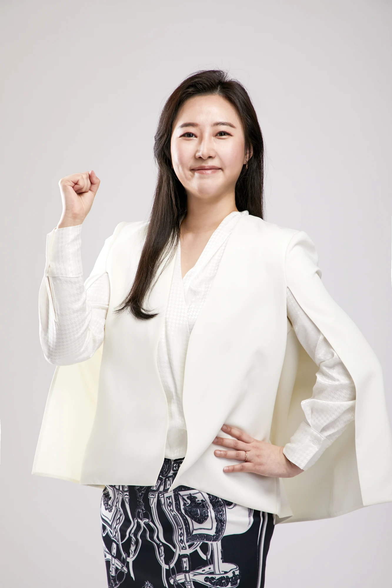
19년의 HRD·커리어 컨설팅 경험 위에 자체 방법론과 직접 개발한 도구를 얹어, 배우는 데서 끝나지 않고 실무에 적용되는 교육을 만듭니다.
현대엔지니어링 · 롯데쇼핑 · 코레일유통 등 대기업 현장 출신 교육과 실무를 모두 아는 강사
'배우고 → 만들고 → 적용하는' 순환 구조로 설계한 자체 AI 학습 방법론
ICF PCC · KPC · EMCC 인증 코치. 질문과 실습으로 행동 변화를 이끄는 진행
한국산업인력공단 디지털원격훈련 아카이브 등재. KG에듀원 AI분야 과정 기획 · 운영 · 강의 전 과정 참여 (2026)
사업 소개 보도 · 이데일리 2026.2.12
『스스로 움직이는 팀』(2026) · 『올 어바웃 커리어』(2022)
『현장이 말하게 하라』(공저) 집필 중
농림축산식품부(농식품인재개발원) · 국토교통부(국토교통인재개발원) · 인제대학교 백병원 · 삼성중공업 · FORVIA 코리아
씨유메디칼시스템 · 건축공간연구원(AURI) · 제주공공정책연수원 · 건강보험심사평가원 · WISET · 숭실대학교 · 덕성여자대학교 · 서울새싹 금천캠퍼스
좋은 교육은 '무엇을 가르쳤는가'가 아니라 '어떤 조건에서, 어떻게, 무엇을 남겼는가'로 증명됩니다.
현장의 제약과 특수한 요구 기기, 시간, 보안, 인원, 학습자 수준
제약을 반영한 커리큘럼 설계와 운영 전략, 맞춤 교보재 제작
손에 남는 산출물과 성과 참가자 결과물, 교보재, 재사용 가능한 커리큘럼
8회차 24시간, 공공 실무자가 자기 업무 자동화 산출물 완성
AI 기반 업무 자동화 및 데이터 활용 실무 (농림축산식품부 실무자)
단발 특강이 아닌 8회차 24시간 장기 과정. 회차 간 학습이 끊기지 않아야 하고, 교육이 끝난 뒤 실제 행정 업무에 적용되는 수준까지 도달해야 하는 설계 난이도.
전 회차 PPT·노션 교재·실습 워크시트를 통일된 디자인 시스템으로 풀패키지 자체 제작. 공공 실무 맥락의 데이터로 실습을 구성해 '배운 것 = 내 업무'가 되도록 연결.
24시간 커리큘럼 전체 교보재 패키지 완성, 실무자들이 자기 업무 자동화 산출물을 직접 제작하며 과정 수료.
수강생의 증언AI를 소비하는 사람에서 AI로 생산하는 사람이 됐습니다
— 8회차 24시간 AI 과정 수료생
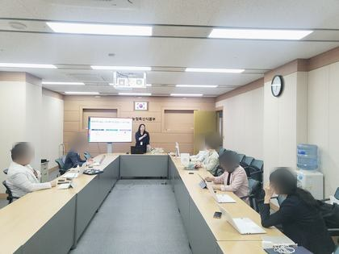
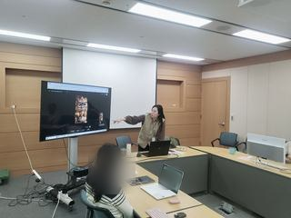
도구 사용법 대신, AI 초안을 되돌려 고치는 동작을 하루에 아홉 번
AI를 활용한 디자인씽킹 (창의적 사고)
국토교통부 6급 실무리더 · 5급 관리자 · 7급 (직급별 3개 회차) · 최초 진행 2026. 9. 2.
발주처가 요구한 핵심은 'AI 왕복 루프'. AI에 시켜 결과를 받는 데서 끝내지 않고, 받은 답을 검증해 다시 넣는 동작을 참가자가 몸으로 익히게 해달라는 조건. 그런데 이 동작은 그냥 두면 거의 일어나지 않는다. 대부분 검증까지는 하고 "이건 좀 아닌데" 하며 멈추고, 고칠 것을 정리해 다시 넣는 마지막 한 걸음이 빠진다. 여기에 디자인씽킹 실습은 사용자가 가상이면 교실에서 무너지고, 같은 과정을 6급·5급·7급 세 직급으로 각각 운영해야 하는 조건까지 겹침.
디자인씽킹 다섯 단계마다 완성형 프롬프트를 배치해 'AI 초안 → 검증 → 재투입 후 확정' 세 박자가 하루에 아홉 번 돌아가게 설계. 모든 프롬프트 뒤에 「삭제할 추정 / 추가할 맥락 / 유지할 표현」 세 칸을 붙여 검증을 강제하고, 옆자리 짝을 오늘의 실제 사용자로 세워 가상 페르소나 문제를 제거. AI가 닿는 깊이를 비용·규율·구조 세 층으로 구분해 오전 실습을 「AI로 페르소나 만들기」가 아니라 「AI가 만든 페르소나의 어디가 틀렸는지 찾기」로 전환. 프레임·프롬프트·워크시트 뼈대는 고정하고 케이스와 검증 기준만 직급별로 교체해, 회차가 늘어도 재설계 없이 옮겨감.
참가자는 배운 느낌이 아니라 물건으로 나감 — 짝이 자기 문제라고 인정한 문제정의문 한 문장, 현실 필터를 통과한 개선 아이디어 3개, 두 번 시험받고 두 번 고친 실물 초안 한 장, 첫 행동·승인자·2주 뒤에 셀 수 있는 지표·계속/수정/중단 기준까지 적힌 48시간 실행안. 여기에 강의안·강사용 진행 가이드·실습 워크시트·프롬프트 카드(웹)·슬라이드를 묶어, 다른 강사가 그대로 진행할 수 있는 한 벌로 제작.
과정 마무리 메시지두 자리를 다 본 문장만 결재선을 넘어갑니다
— 오전에는 문제를 내 자리에서, 오후에는 같은 문제를 반대편 자리에서 다시 본 뒤
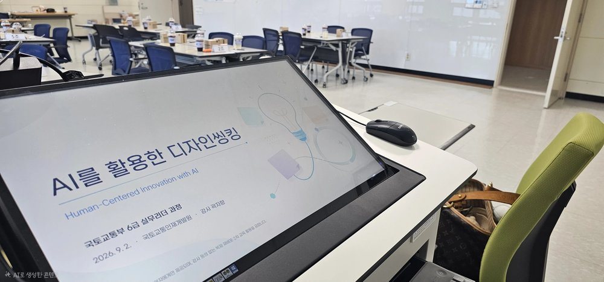
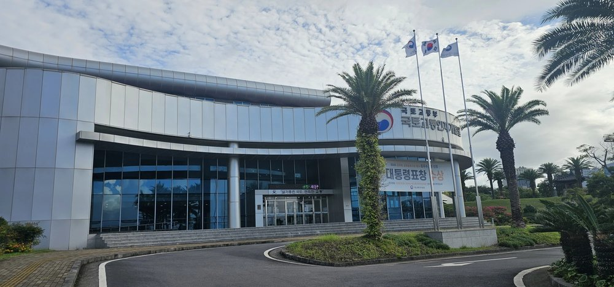
디자인씽킹 × AI 리터러시 · AI가 닿는 깊이를 비용의 층(전사·분류·정리) / 규율의 층(첫 아이디어 고착) / 구조의 층(권한·예산·제도)으로 구분
계단식 3단 질문으로 AI가 어디까지 닿는지 몸으로 재보기
2인 1조 짝 인터뷰로 페르소나 작성 · AI가 만든 합성 페르소나의 어디가 틀렸는지 찾는 검증 실습
관점 서술문 → 문제정의문 → 해결책이 섞이지 않았는지 시스템 체크
손으로 3분 → SCAMPER → 짝에게 묻기 → 현실 필터를 통과한 3개로 압축
이해관계자 지도 · 이 안에 가장 먼저 반대할 한 사람 찾기
반대하는 사람의 눈으로 문제정의문 다시 쓰기
계획서가 아니라 상대가 설명 없이 바로 쓰는 실물 한 장
오전에 인터뷰한 짝이 이해관계자 역할로 직접 써본 뒤 수정
내 업무를 모르는 다른 조가 역할 카드(결재선 · 실행 부담을 지는 실무자 · 유관기관 담당자)를 뽑아 그 자리에서 읽고 써본 뒤 수정
48시간 실행안 · 2주 뒤에 셀 수 있는 지표 · 일어서서 선언
60분·65분을 배정한 두 구간이 실제로는 각 30~40분에 끝나 참가자가 붕 뜸 → 45분씩으로 축소해 35분 확보
같은 조 네 명의 협업 스타일을 분석했지만 그 네 명은 내일 같이 일하지 않음 → 분석 대상을 「여기 있는 우리」에서 「내 부서의 우리」로 이동하고, 조는 다른 부서의 사례를 주고받는 자리로 재정의
고친 것을 다시 시험하지 않아 반복이 사실상 한 번 → 확보한 35분으로 두 번째 테스트를 신설. 짝은 맥락을 이미 알기 때문에, 내 업무를 모르는 사람이 읽고 쓸 수 있어야 진짜 실물. 한 바퀴 1시간 20분 · 하루 두 바퀴로 완성
설계 전제 · 시간 배분 · 단계별 진행 · 프롬프트 전문과 검증 질문
당일 현장 휴대용 큐시트. 시각별로 강사가 그대로 읽는 문장, 넘어가기 전에 눈으로 확인할 것, 자주 무너지는 지점 20가지와 대처
태블릿 필기용. 쪽마다 「무엇 / 왜 / 오해」 개념 요약 + 검증 체크리스트 + 필기 영역
참가자가 QR로 열어 복사·붙여넣기. 프롬프트 아홉 개 + 검증 질문 + 진행 체크
강의용
팀장급 1차에 이어 책임매니저급 2차까지 재의뢰
책임매니저 리더십 워크숍 · Microsoft Copilot 실무 활용 (1차 팀장급 과정 재의뢰)
글로벌 자동차 부품사의 두 번째 의뢰. 1차는 단양 연수원에서 팀장급 55명을 대상으로 진행했고, 2차는 책임매니저급 50명을 대상으로 한 리더십 워크숍의 5시간 세션. 직급과 역할이 다른 만큼 1차 내용을 그대로 반복할 수 없고, 실무를 직접 굴리는 책임매니저에게는 'AI 소개'가 아니라 당장 자기 업무에 적용되는 수준이 필요한 조건.
도구를 늘리는 대신 사내 업무 환경에서 바로 쓸 수 있는 Microsoft Copilot 한 가지에 집중해 커리큘럼을 재설계. 참가자가 각자 노트북으로 Copilot을 직접 열고, 문서·메일·회의록·자료 정리처럼 책임매니저가 매일 반복하는 업무를 그 자리에서 처리해보는 실습 중심으로 구성.
리더십 워크숍 안에서 AI 세션이 별도 특강이 아니라 '리더의 업무 도구를 다루는 시간'으로 자리잡음. 팀장급 1차에 이어 책임매니저급 2차까지, 같은 기업의 리더십 계층을 따라 이어지는 교육으로 연결.
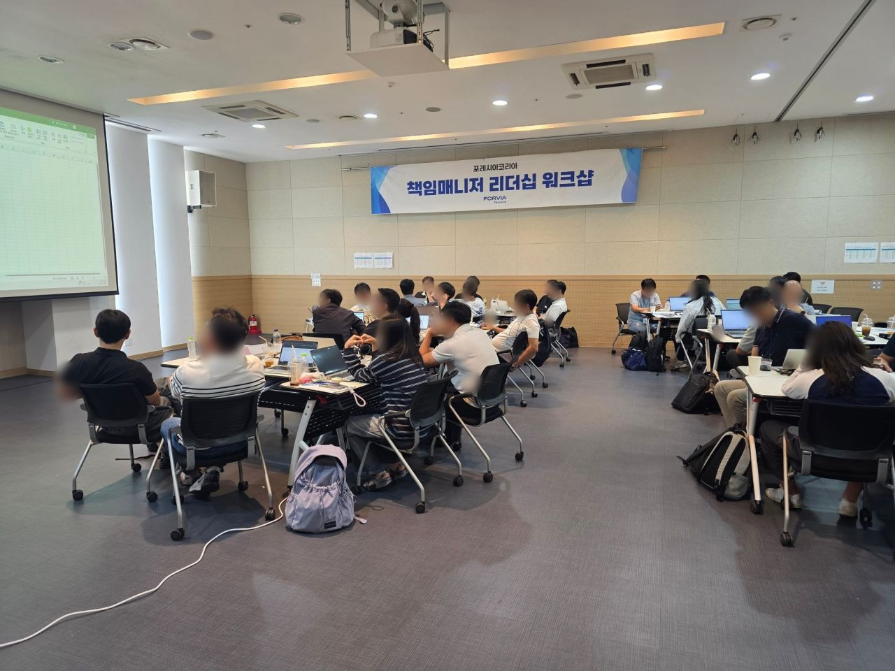
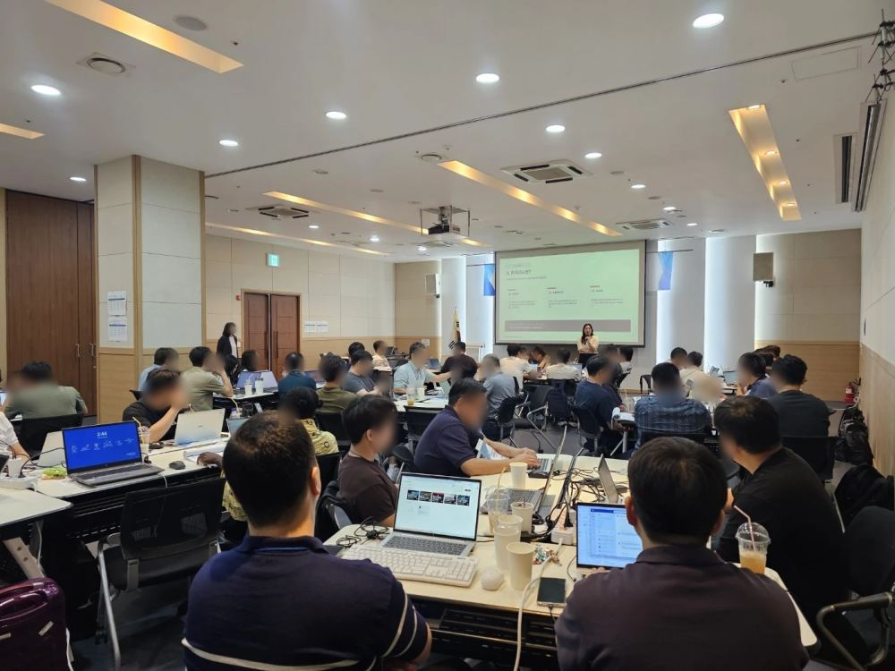
실데이터 사용 불가 조건에서 직군별 AI 에이전트 설계
인제의대 구성원을 위한 AI 활용 교육 및 워크숍 (자기계발 역량강화 프로그램)
환자 정보를 다루는 의료 현장 특성상 실데이터 실습이 원천 불가. 교수·전공의·연구원·행정직까지 업무도 AI 숙련도도 제각각인 구성원이 한 강의실에 모이는 조건.
익명화된 의료·연구·행정 업무 시나리오를 직군별로 나눠 제작하고, 그룹별 모니터가 설치된 강의장 구조를 활용해 조별 실습으로 운영. 도구 사용법이 아니라 '내 업무를 대신할 AI 에이전트 설계'를 축으로 커리큘럼을 구성.
참가자별로 진료·연구·행정 업무에 바로 투입 가능한 AI 에이전트 워크플로우를 직접 설계·완성. 보안 제약이 가장 강한 의료기관에서도 실전형 실습이 가능함을 재확인한 사례.
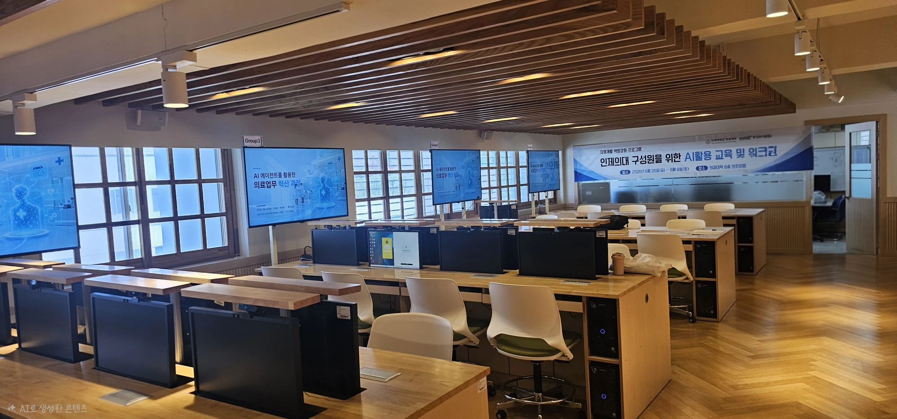
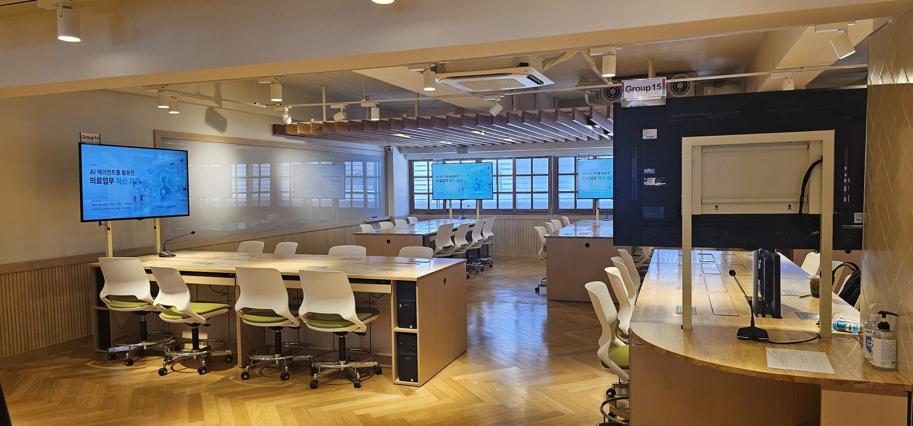
보안 제약 + 국영문 병행, 실습 데이터셋부터 직접 제작
4일 집중 AI 업무 자동화 과정
연구기관 특성상 실제 내부 데이터로는 실습 불가(보안). 여기에 국·영문 병행 자료 요구까지 '가르칠 재료'부터 새로 만들어야 하는 조건.
기관의 연구 업무를 반영한 익명 실습 데이터셋(건축·도시공간 연구데이터)을 직접 제작. 국·영문 이중언어 슬라이드, 강사 가이드, 조별 실습 가이드까지 일체형 커리큘럼으로 구성.
4일 집중 커리큘럼 + 기관 맞춤 실습 데이터셋 + 국영문 교보재 풀세트. 보안 제약이 있는 조직도 '실전형 실습'이 가능함을 입증.
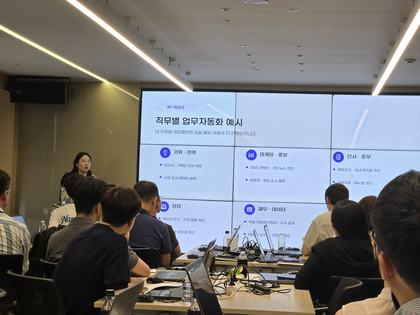
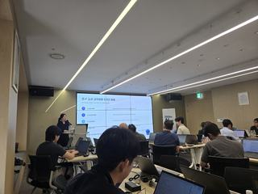
전원이 홍보영상 완성, 이미지 과정 수료생이 영상 과정으로 재의뢰
AI 이미지 과정(2일) + AI 영상 제작 과정(4일)
생성형 AI를 처음 접하는 학습자 비중이 높은 공공 연수 환경. 이미지 2일 과정과 영상 4일 과정 각각에서 '배우기'에 그치지 않고 완성된 홍보영상까지 만들어내야 하는 목표.
이미지 생성 → 영상 제작 → 음악 → 자막으로 이어지는 '작은 성공의 연속' 구조로 커리큘럼 설계. 단계별 워크시트로 진입 장벽을 낮추고, 개인별 속도 차를 흡수하는 실습 운영.
두 과정 모두 참가자 전원이 이미지·영상·음악·자막까지 전 요소를 AI로 직접 제작한 홍보영상을 완성해 제출. 1차 이미지 과정(14H) 종료 후, 동일 기관·동일 수강생 대상 2차 영상 과정(28H)으로 연계 진행.
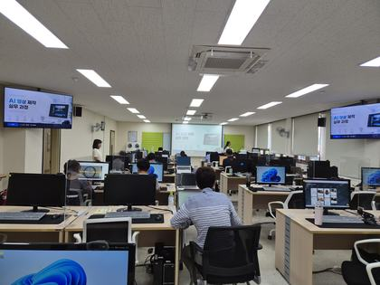
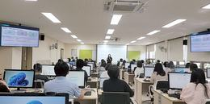
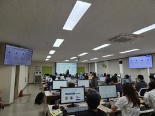
◆ 커스텀 GPT 2종 직접 개발·배포
120분 · 100명 · 모바일만으로 전원 실습 완료
인턴 대상 AI 활용 워크숍
단 120분, 개인 노트북 없는 환경에 100명이 넘는 인원이 동시 참여. 짧은 시간 안에 'AI를 들어봤다'가 아니라 '직접 써봤다'는 경험까지 만들어야 하는 초압축 조건.
핵심 도구 2~3개로 과감하게 범위를 좁히고, 이론 최소화 · 체험 최우선의 모바일 전용 압축 커리큘럼으로 재구성. 100명 규모가 동시에 막힘 없이 따라오도록 1분 단위로 실습 동선을 설계.
120분 내 100명 이상 참가자 전원이 모바일 실습을 완료. 대규모 · 짧은 특강 형식에서도 '결과물이 남는' 교육이 가능함을 보여준 사례.
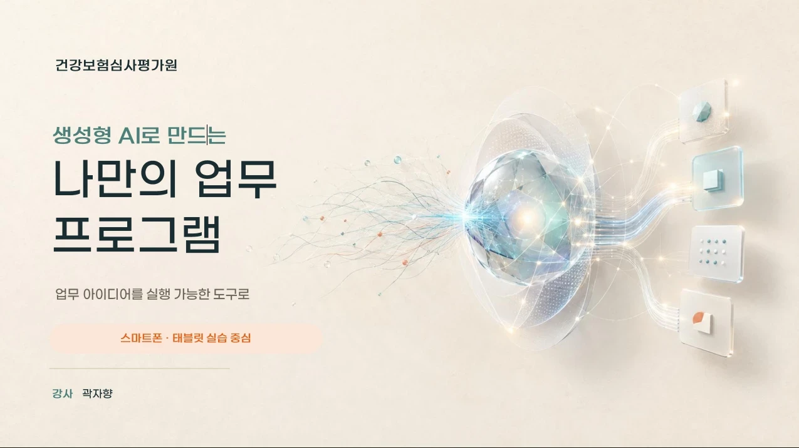
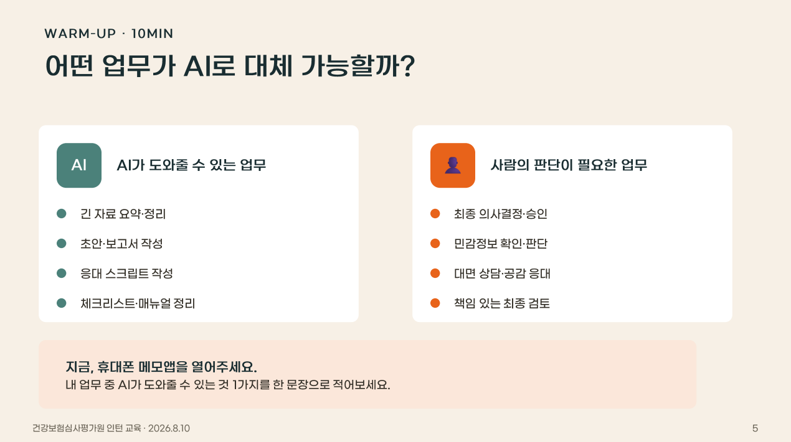
노트북 없이 스마트폰만으로 50명이 8시간 완주
임직원 AI 크리에이터 워크숍
노트북·PC를 전혀 쓸 수 없는 현장 조건. 50명이 넘는 대규모 인원이 스마트폰만으로 하루 8시간 실습 전 과정을 완주해야 하는 워크숍.
처음부터 '모바일 온리' 전제로 실습 동선을 재설계. 모바일 최적화 도구만 선별하고, 단계별 접근 경로를 단순화해 대규모 인원이 동시에 막힘 없이 실습하도록 운영 프로토콜을 구축.
참가자 전원이 스마트폰만으로 AI 이미지·영상 콘텐츠 제작을 완료하고 현장 공유. '장비 제약 = 교육 불가'라는 통념을 뒤집은 사례.
※ 보안 사업장 특성상 내부 촬영이 제한된 현장입니다.
비전공자가 4시간 안에 동작하는 자동화 봇 완성
WFA 과정 정보 수집 자동화 봇 제작 실습
WFA 과정 참여자 대부분이 비전공자. 4시간이라는 짧은 시간 안에 개념 이해와 동작하는 결과물 완성을 동시에 달성해야 하는 조건.
정보 수집 자동화라는 하나의 목표에 집중하고, 노드를 하나씩 추가하며 매 단계 결과를 눈으로 확인하는 방식으로 실습을 설계.
참가자들이 코드 없이 정보 수집 자동화 봇을 직접 완성. 짧은 특강에서도 결과물이 남는 구조를 검증.
강의 영상을 직접 촬영해 제작, 다수 기수 평가·피드백까지 운영
고용노동부·한국산업인력공단 주관 '2026 디지털 원격훈련 아카이브' 사업 (운영기관 KG에듀원)
'크리에이티브·생산성 도구' · 'AI 업무 자동화 실무' 온라인 과정
사업 소개 보도 · 이데일리 2026.2.12 「KG에듀원, 3000개 콘텐츠로 디지털 원격훈련 아카이브 운영」
고용노동부·한국산업인력공단이 주관하고 KG에듀원이 운영하는 디지털 원격훈련 아카이브 사업의 AI 분야 콘텐츠. 강의를 사전에 영상으로 촬영해 제공하는 온라인 과정. 현장처럼 반응을 보며 조정할 수 없고, 여러 기수가 같은 영상을 수강하므로 촬영 시점에 내용과 전달이 완결돼 있어야 하는 조건. 반면 과제 완성도는 기수마다 달라 평가와 피드백은 매 기수 새로 운영해야 함.
촬영 전에 구성과 실습 순서를 확정해, 한 번의 촬영으로 여러 기수가 재사용할 수 있는 강의 영상을 직접 제작. 평가는 별도 축으로 분리해 과제 유형별 기준을 사전에 문서화하고, 반복되는 피드백 패턴을 정리해 개별 코멘트에 재활용하는 체계를 구축.
'AI시대 꼭 알아야하는 IT이해' 10차시와 'AI 스마트 워크' 7차시, 총 17개 차시를 직접 촬영·제작. 기수가 바뀌어도 그대로 재사용되는 영상 강의 콘텐츠 확보. 여기에 일관된 평가 기준과 수강생별 상세 피드백을 결합해, 사전 제작 영상 과정에서도 개별 지도가 이뤄지도록 구성.
생성형 AI(LLM) 동작 원리: 학습·추론 개념 · AI 리터러시 개념: AI를 비판적으로 활용하는 능력 · 할루시네이션(환각) 개념과 검증 방법
AI가 문서·이메일·PPT·엑셀에 연결되는 방식 · '회의 녹취 → AI 요약 → 회의록' 자동 워크플로 · 직무별 AI 활용 사례(인사·영업·재무·CS)
기업 AI 도입 단계(파일럿→부분도입→전사) · AI 도입 구조 3층: 데이터·AI모델·서비스 레이어 · 직접 개발 vs SaaS AI 구독 비용·리스크 비교
노코드 개념: 코딩 없이 앱·자동화 제작 · 대표 노코드 툴(Notion 자동화·Zapier·구글 앱스크립트) · 노코드 vs 로우코드 차이 및 적합 상황
자동화 3요소: 트리거·조건·액션 · 직장인 반복 업무 중 자동화 가능 항목 탐색 · 자동화 ROI 개념: 구축 시간 vs 절감 시간
자동화 실패 사례: 예외 처리 부재·보안 허점 · 자동화 도입 전 체크리스트(데이터 품질·담당자·롤백) · 자동화 이후 업무자의 역할 변화
RPA·노코드·AI 자동화 3유형 분류 및 차이 · 동일 업무를 세 도구로 구현하면 어떻게 다른가 · 도구 선택 기준(비용·기술수준·보안·확장성)
클라우드 종량제(Pay-as-you-go) 개념 · 스토리지·컴퓨팅·트래픽 항목별 요금 구조 · 온프레미스(서버 직접 구매) vs 클라우드 비용 비교
데이터 보안 3원칙(기밀성·무결성·가용성) · 3-2-1 백업 규칙과 랜섬웨어 대응 · 개인정보보호법·사내 보안 규정 직원 준수사항
1~19차시 핵심 개념 총정리 · AI·자동화·클라우드가 만드는 업무 변화 방향 · 내 직무의 5년 후 변화 예측 및 준비 방향
NotebookLM에 사내 규정, 매뉴얼을 넣고 필요한 정보만 즉시 찾아내기
신구 대조표 작성 없이, 두 문서의 변경 사항과 핵심 이슈를 자동 비교
프로젝트 일정, 담당자 등이 섞인 텍스트를 클릭 한 번으로 업무 분장표로 정리
대충 적은 아이디어를 대외 발송용 공문, 협조전, 기획서 양식으로 즉시 업그레이드
설명하기 어려운 업무 절차나 구조를 AI가 시각적 도표로 자동 생성
고객 만족도나 사내 투표의 주관식 텍스트를 AI가 카테고리별로 요약 및 통계
클로바노트 등 STT 텍스트를 활용해 실행 과제가 포함된 정식 회의록 생성
대면·비대면 2개 차수를 각각 완결형으로 별도 설계
의료기기 기업 대상 Claude 실무 활용 교육
같은 기업의 2개 차수지만 참가자가 서로 다름. 1차는 전 직군 혼합 대면, 2차는 연구직 대상 비대면. 선수과정을 전제할 수 없어 각각 완결된 구조가 필요.
1차는 직무 무관하게 적용 가능한 범용 실습으로, 2차는 기술문서 검증이라는 연구직 실무에 특화해 별도 설계. 비대면 환경에 맞춰 실습 확인 방식도 재구성.
차수별로 독립적으로 완결되는 커리큘럼 2종 확보. 대면·비대면 양쪽 운영 경험 축적.
고용노동부 사업, 비전공자 40명이 자동화 봇 완성
고용노동부 '재학생 맞춤형 고용서비스' 사업 <AI + I'm possible>
고용노동부 재학생 맞춤형 고용서비스 사업. 전공이 제각각인 재학생 40명이 대상이며, 전산실 공용 PC 환경에서 이틀에 걸쳐 진행. 코드를 몰라도 실제로 동작하는 결과물까지 도달해야 하는 조건.
1일차는 Apps Script로 코드 기반 자동화를 경험하고, 2일차는 같은 구조를 n8n으로 코드 없이 재현하는 2단 구성. 취업 준비에서 반복되는 정보 수집·정리 작업을 실습 소재로 삼아 학습 동기를 확보.
참가자들이 매일 아침 뉴스를 AI가 요약해 메일로 보내주는 자동화 봇을 각자 완성. 수업 후에도 본인 계정에서 계속 작동하는 결과물로 남김.
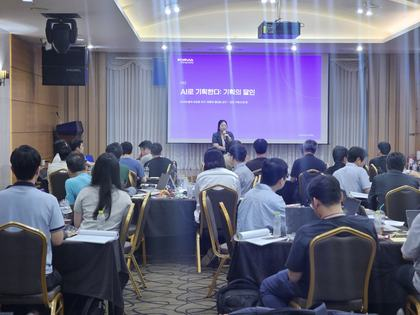
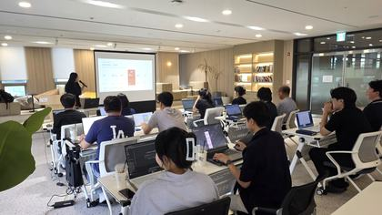
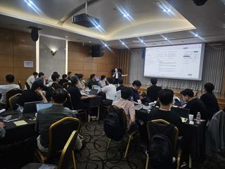
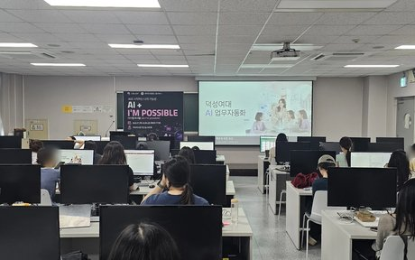
수강생이 직접 만든 산출물과 다듬지 않은 후기 원문. 교육이 무엇을 남겼는지 두 가지 증거로 제시합니다.
설문 자유응답 원문 그대로 옮겼습니다. 표현과 맞춤법을 다듬지 않았습니다.
AI를 소비하는 사람에서 AI로 생산하는 사람이 됐습니다
Ai를 단순히 글 교정 용도로만 사용했었는데 강의를 들으면서 생각보다 다양한 범위에 활용할 수 있다는 것을 알게 된 유익한 시간이었습니다. 좋은 강의 들려주셔서 감사합니다!!
실제로 자기가 원하는 대로 이미지를 만들어 볼 수 있어서 좋았습니다
notebook LM이 너무 좋았습니다. 바로 적용해보겠습니다!
물어보고 답변 보기만 하던 AI, 활용범위를 넓힐 수 있었습니다
쉽게 설명하고 모두가 실습할 수 있어서 유익했습니다
AI 업무 효율화에 첫발을 들여서 기뻐요
AI 활용범위 및 운영방법을 알게 되어 유익함
AI 잡도리에도 노하우가 필요함을 알게 됐어요
업무의 혁신을 맞이하게 해주신 선생님 감사합니다
교육에 실제로 투입되는 자체 개발 도구들입니다.
AI 리터러시 진단, 셀프리더십 진단, 코칭 퀴즈 등 GitHub Pages로 직접 개발·배포, 교육 전후 진단에 활용 교육 현장의 필요에 따라 지속적으로 개발·배포하고 있습니다.
Bubble.io + Anthropic API 기반 글쓰기 분석 서비스를 노코드로 직접 기획·구축
Python · Playwright · Claude API로 콘텐츠 발행 자동화 파이프라인 구축·운영
업무 자동화 플랫폼 n8n을 자체 서버로 직접 운영 교육에서 다루는 자동화를 스스로 실전 사용
기관별 맞춤 노션 학습 페이지 제작 교육 후에도 학습자가 계속 참고하는 살아있는 교재
보안·업종 특성으로 실데이터를 못 쓰는 기관을 위해 익명 실습 데이터셋을 직접 설계·제작
'듣는 교육'이 아니라 배우고–만들고–적용하는 순환 구조. 모든 커리큘럼이 이 자체 방법론 위에서 설계됩니다.
국제코칭연맹 · 한국코치협회 · 유럽멘토링코칭협회 인증을 모두 보유한 코치의 퍼실리테이션. 강의 전달을 넘어, 질문과 실습으로 학습자의 행동 변화를 이끕니다.
슬라이드 · 노션 교재 · 워크시트 · 실습 데이터셋 · 강사 가이드까지, 과정에 필요한 모든 것을 직접 만듭니다.
스마트폰 온리, 120분 압축, 보안 데이터 제약, 국영문 병행. 어떤 조건에서도 검증된 운영 경험.
장비 · 시간 · 보안 · 인원 어떤 제약이든, 결과물이 남는 과정으로 만들어 드립니다.